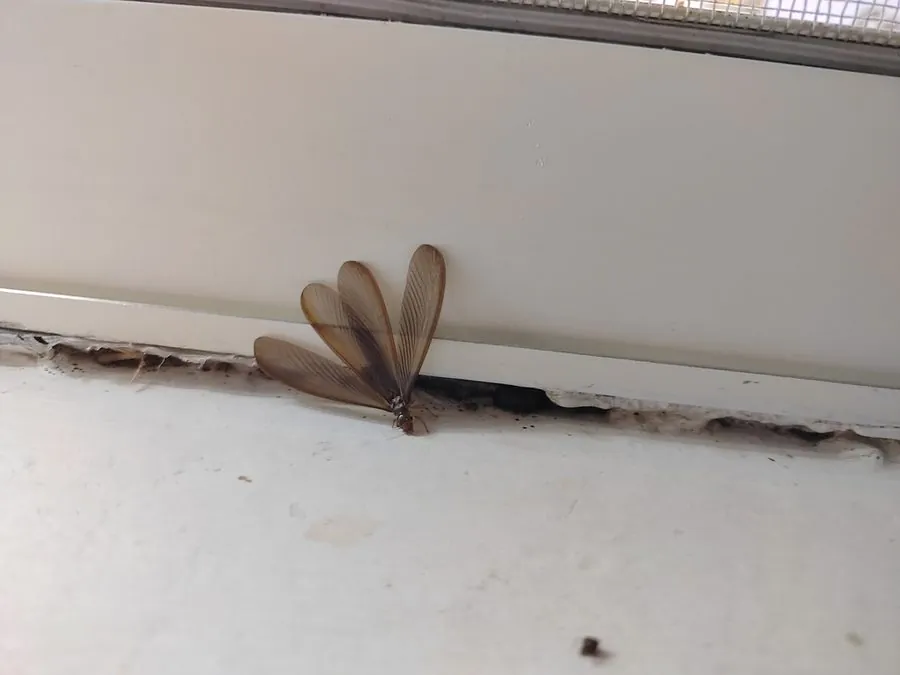

昆虫 · 动物界
黑翅土白蚁 Odontotermes formosanus

中国南方常见的土栖白蚁，群体在地下筑巢，工蚁培育菌圃分解枯木，对堤坝和树木有危害，也是森林分解者。
- 分类
- 门节肢动物门纲昆虫纲目蜚蠊目科白蚁科属土白蚁属
- 栖息环境
- 丘陵林地、堤坝、果园和农田，地下筑巢、巢内育菌
- 地理分布
- 中国南方大部分地区，以及东南亚部分地区
- 保护级别
- 暂无评估；水利和林业重要害虫
物种志
黑翅土白蚁有翅繁殖蚁体长约 1.5 cm，体黑褐色，四翅黑褐色、等长；工蚁体白色，头部圆形；兵蚁头部黄色，上颚发达呈镰刀状。群体在地下筑巢，巢内培育菌圃，用来分解植物材料。
它生活在中国南方的丘陵、林地和堤坝附近，取食枯木、落叶和活树根部，工蚁把植物材料带回巢中培育真菌，幼虫和蚁后取食菌圃。黑翅土白蚁对堤坝、水闸和树木有一定危害，被称为土栖性白蚁，是水利工程和林业的重点防治对象；同时在森林生态中，它能分解枯木、促进物质循环。防治以诱杀、药物屏障和定期检查为主，堤坝上发现白蚁巢要及时处理。
形态与习性
- 食性取食枯木、落叶和活树根部，并培育菌圃
- 体长有翅繁殖蚁约 1.5 cm
- 识别繁殖蚁四翅黑褐色，兵蚁头部黄色、上颚发达
- 巢穴地下筑巢，巢内培育菌圃分解植物材料
- 防治诱杀、药物屏障和定期检查
趣味知识
- 黑翅土白蚁在地下筑巢，巢里还培育着真菌菌圃。
- 它会对堤坝和树木造成危害，是水利工程重点防治对象。
- 在森林里，它也能分解枯木，促进物质循环。